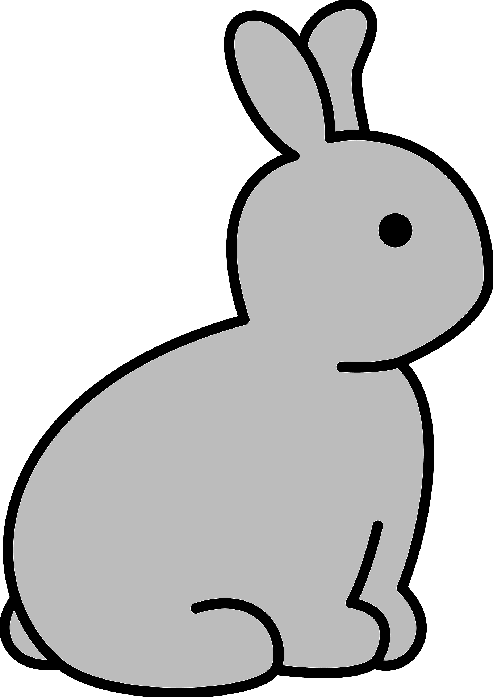

Create a natural system that contains several moving components, allowing users to interact with it via mouse and/ or keyboard.
An interactive game of Rabbit in the Rain. In this worldview, the user needs to use a carrot to lead the rabbit, helping the rabbit to avoid raindrops.
I used diagram to list out the components and interaction. It's updated several times to be clearer.
The initial idea was very simple and direct. Everything is based on "Rabbit dies when it gets wet", which made it too vague. I didn't think about the logic in it and how it could be interactive. Later I learned more about python and processing over the weeks, and refined my diagram to be more clear on what does each component does, and put speed, direction, start and end into consideration.
Start with thinking what are the elements and variables I have
Use simple shapes instead of pictures at first to figure out the movements
Add user interaction into the game, and let the rabbit follows the user.
Define where's the end. The rabbit has 3 life, after that the game exit.
Replace all the shapes with pictures and do adjustments like size and positions.
The game is built with 120+ lines of code. I could easily get lost when i trying to debug it. One way to deal with the complexity is to organize the sequence of the functions and try to eliminate the parameters in it. Secondly is to set and name all the components properly and clearly so that even I need to change the picture later, it won't affect other codes. The last thing is to keep writing comments after each important line, although it feels a bit too much while writing it, it really helps when I want to go back and change something.
This is my first time learning python, so there's still a lot of things I haven't figured out yet. But I'm sure there's a lot of opportunities for developments for future steps.
Refine the code to be fully object-oriented.
Define what is a win and loss of the game, what is the user's goal here?
Let the user participate more in the game, maybe use the keyboard to control the rabbit would make the user feel more immersive.